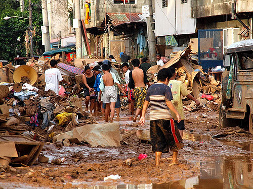

Poverty in the Philippines
Gallery of the Poverty in the Philippines
Malabon, Manila
Charcoal harvesting is banned in most districts of Manila, yet in the poorest areas just outside the city, families from the slums manage to keep up production without much interference from the authorities. Every day, children and adults wade through rubbish dumps and scour construction sites to gather whatever wood they can find to feed their charcoal kilns. It’s dirty work, but they have no choice: Charcoal making is their only form of income.

Cagayan de Oro City
The polling firm said the first quarter self-rated poverty of Mindanao improved by 12 percentage points from 49% recorded in the last quarter of 2018, going below the island’s previous lowest record of 38% in December 2011. Administered on 1,440 adults aged 18 years old and above from March 18 to 31 nationwide, the country’s self-rated poverty found a new record-low of 38%, or an estimated 9.5 million families, a decrease of 12 percentage points from 50% in the last quarter of 2018, and 4 points lower than the previous record-low of 42% in September 2016 and March 2018.

Central Visayas
The Department of Social Welfare and Development 7 through the National Household Targeting Section (NHTS) or Listahanan Team has assessed over one million families in Central Visayas. Listahanan is an information management system of DSWD that identifies who and where the poor are. All encoded information in the household assessment form (HAF) is subjected to Proxy Means Test (PMT) to generate the initial list of poor households. Out of these assessed households, more than 600,000 are identified poor on the initial list. The initial lists of poor households were posted in the barangays for the public to check and appeal for corrections, if there are any.
Pasig City
Pasig City’s population is growing rapidly and a significant portion of the population is informal settlers who live in poverty. The city is also located in a floodplain area and is vulnerable to the effects of climate change.